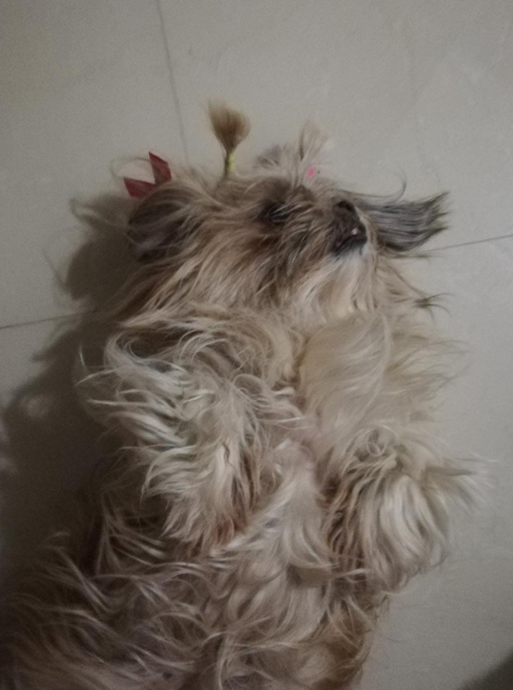

Les presento a Juanita!!!
Juanita es una Shih-Tzu que hace poco cumplio sus 7 años,
es una pequeña bola de pelo llena de felicidad!! :')
aunque si no esta jugando, siempre puede acostarse
reflexionar!.
Crees que Juanita deberia tener su propio ?
A continuacion unos cuantos datos curiosos sobre Juanita!!:
| | Gustos | | Cualidades |
|---|---|
| | Dormir | | Feliz! |
| | Comer | | Amigable |
| | Correr | | Juguetona |